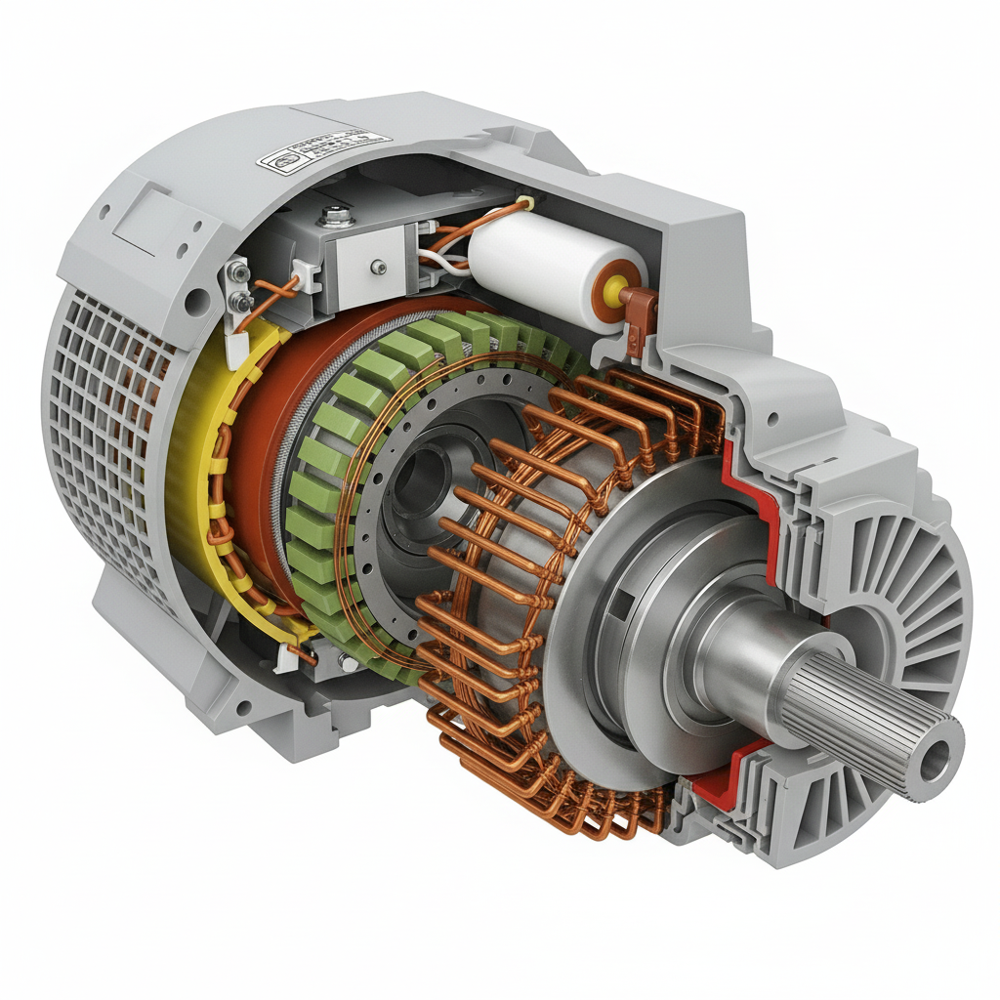
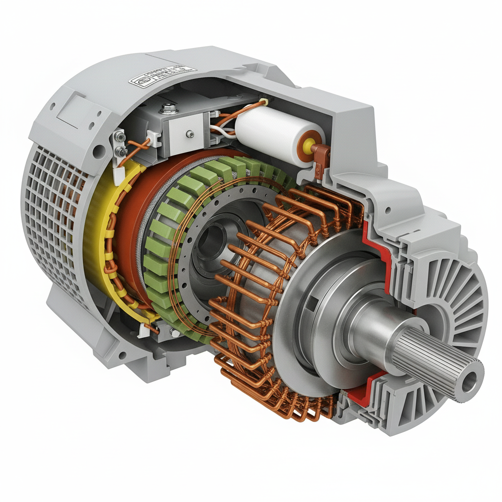

Motores Síncronos
- Velocidade Constante: A velocidade do rotor é a mesma do campo magnético do estator.
- Sem Escorregamento: O rotor "trava" com o campo girante.
- Fator de Potência: Pode ser ajustado, sendo ideal para correção de fator de potência.
- Partida Complexa: Geralmente requer um método de partida auxiliar.

 
